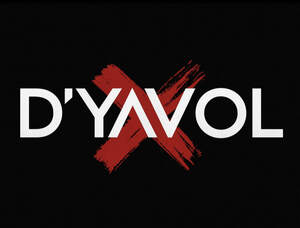

Trade Mark Journal No.2025/021 23 May 2025
UK00004191443 18 April 2025 (14,35)

- Class 14
- Jewellery; Necklaces [jewellery]; Brooches [jewellery]; Jewellery brooches; Jewellery, including imitation jewellery and plastic jewellery; Pendants [jewellery]; Bracelets [jewellery]; Brooches [jewellery, jewelry (Am.)]; Ornaments [jewellery]; Amulets [jewellery]; Amulets being jewellery; Pearls [jewellery]; Trinkets [jewellery]; Necklaces [jewellery, jewelry (Am.)]; Fashion jewellery; Jewelry; Lockets [jewellery]; Gold jewellery; Jade [jewellery]; Brooches [jewelry]; Jewelry brooches; Brooches being jewelry; Clasps for jewellery; Charms [jewellery]; Charms for jewellery; Jewellery charms; Enamelled jewellery; Costume jewellery; Pearls [jewellery, jewelry (Am.)]; Ornaments [jewellery, jewelry (Am.)]; Items of jewellery; Jewellery items; Decorative brooches [jewellery]; Trinkets [jewellery, jewelry (Am.)]; Amulets [jewellery, jewelry (Am.)]; Rings being jewellery; Rings [jewellery]; Pewter jewellery; Bracelets [jewellery, jewelry (Am.)]; Jewellery stones; Cloisonné jewellery [jewelry (Am.)]; Wristlets [jewellery]; Cloisonné jewellery; Charms [jewellery, jewelry (Am.)]; Cloisonne jewellery; Lockets [jewellery, jewelry (Am.)]; Chains [jewellery, jewelry (Am.)]; Rings [jewellery, jewelry (Am.)]; Jewellery products; Ivory [jewellery, jewelry (Am.)]; Shoe jewellery; Precious jewellery; Crucifixes as jewellery; Necklaces [jewelry]; Agate as jewellery; Pins [jewellery, jewelry (Am.)]; Jewellery chains; Chains [jewellery]; Ivory jewellery; Jewellery in semi-precious metals; Medallions [jewellery, jewelry (Am.)]; Jewellery chain; Jewellery caskets; Paste jewellery [costume jewelry (Am.)]; Paste jewellery [costume jewelry [Am.]]; Gold plated brooches [jewellery]; Pins [jewellery]; Pins being jewellery; Jewellery boxes; Amber pendants being jewellery; Jewellery for personal adornment; Cabochons for making jewellery; Pendants [jewelry]; Imitation jewellery; Jewellery chain of precious metal for necklaces; Amberoid pendants being jewellery; Body jewellery; Gold thread [jewellery, jewelry (Am.)]; Beads for making jewellery; Jewelry (Paste -) [costume jewelry]; Paste jewelry [costume jewelry]; Jewellery for pets; Jewellery incorporating diamonds; Personal jewellery; Fake jewellery; Silver thread [jewellery, jewelry (Am.)]; Jewellery in non-precious metals; Plastic costume jewellery; Imitation jewellery ornaments; Clips of silver [jewellery]; Hat jewellery; Facial jewellery; Jewellery findings; Crosses [jewellery]; Jewellery in the form of beads; Sterling silver jewellery; Paste jewellery; Jewellery (Paste -); Bracelets [jewelry]; Jewellery incorporating pearls; Amulets [jewelry]; Pearls [jewelry]; Jewellery articles; Articles of jewellery; Jewellery made from gold; Jewellery made from silver; Diamond jewelry; Jewellery chain of precious metal for anklets; Wire of precious metal [jewellery, jewelry (Am.)]; Jewellery containing gold; Lockets [jewelry]; Dress ornaments in the nature of jewellery; Clasps for jewelry; Jewellery chain of precious metal for bracelets; Jewellery in precious metals; Jewellery of precious metals; Jewelry stickpins; Threads of precious metal [jewellery, jewelry (Am.)]; Artificial jewellery; Trinkets [jewelry]; Jewellery for personal wear; Decorative pins [jewellery]; Jewellery fashioned from non-precious metals; Jewellery cases; Jewelry charms; Charms for jewelry; Charms [jewelry]; Body costume jewellery; Jewellery rope chain for necklaces; Jewellery fashioned of semi-precious stones; Precious jewels; Precious metals; Precious gemstones; Precious stones; Figurines of precious or semi precious stones; Precious and semi-precious gems; Statues of precious metals; Trophies of precious metals; Cuff links made of precious metals with precious stones; Threads of precious metals; Precious and semi-precious stones; Cases of precious metals for jewels; Ingots of precious metals; Busts of precious metals; Unwrought precious stones; Semi-worked precious metals; Key charms of precious metals; Insignia of precious metals; Chains of precious metals; Earrings of precious metal; Fancy keyrings of precious metals; Personal ornaments of precious metal; Watches made of precious metals; Jewellery made of precious metals; Trophies made of precious metals; Jewellery fashioned of precious metals; Imitation precious stones; Figurines of precious stones; Necklaces of precious metal; Prize cups of precious metals; Spinel [precious stones]; Bracelets of precious metal; Medals made of precious metals; Figurines of precious metal; Precious metal trophies; Statuettes of precious metal; Statues of precious metal; Synthetic precious stones; Jewelry boxes of precious metals; Jewellery boxes of precious metals; Small jewellery boxes of precious metals; Precious metals and their alloys; Alloys of precious metals; Ingots of precious metal; Medallions made of precious metals; Key rings of precious metals; Boxes of precious metal; Precious metals, unwrought or semi-wrought; Threads of precious metal; Clothing ornaments of precious metals; Jewellery being articles of precious metals; Tie-pins of precious metal; Key holders of precious metals; Jewellery coated with precious metals; Rings of precious metal; Cases of precious metals for watches; Jewel cases of precious metal; Busts of precious metal; Jewellery plated with precious metals; Jewellery made of precious stones; Badges of precious metal; Trophies coated with precious metals; Jewellery being articles of precious stones; Articles of jewellery with precious stones; Objet d'art made of precious metals; Medals coated with precious metals; Cases of precious metals for clocks; Jewellery incorporating precious stones; Sculptures of precious metal; Artificial stones [precious or semi-precious]; Key charms coated with precious metals; Key fobs of precious metals; Articles of jewellery made of precious metals; Alloys of precious metal; Precious metal alloys; Figures of precious metal; Threads of precious metal [jewelry]; Insignias of precious metal; Threads of precious metal [jewellery]; Jewellery caskets of precious metal; Crucifixes of precious metal, other than jewelry; Crucifixes of precious metal, other than jewellery; Jewellery cases of precious metal; Trinkets coated with precious metal; Rings coated with precious metals; Jewelry cases of precious metal; Prize cups of precious metal; Diamond [unwrought]; Diamonds; Pearl; Platinum rings; Gold plated rings; Emerald; Gold rings; Jade; Topaz; Cut diamonds; Platinum ingots; Platinum alloy ingots; Platinum [metal]; Gold plated earrings; Ruby; Silver rings; Sapphire; Chalcedony used as gems; Gold alloy ingots; Platinum jewelry; Jewellery of yellow amber; Jewelry of yellow amber; Gold ingots; Emeralds; Gold earrings; Opal; Square gold chain; Silver alloy ingots; Jewel pendants; Rings [jewellery] made of precious metal; Silver ingots; Gold plated bracelets; Gold plated chains; Tanzanite being gemstones; Signet rings; Wire of precious metal [jewellery]; Ring holders of precious metal; Chain mesh of precious metals [jewellery]; Wire of precious metal [jewelry]; Split rings of precious metal for keys; Silver earrings; Peridot; Sapphires; Olivine [peridot]; Olivine [gems]; Tourmaline gemstones; Jewels; Opals; Gems; Semi-precious gemstones; Chalcedony; Artificial gem stones; Gemstones; Natural gem stones; Cabochons; Pearls made of ambroid [pressed amber]; Gold thread [jewellery]; Gold thread jewelry; Gold thread [jewelry]; Gold necklaces; Gold; Silver thread [jewellery]; Copper tokens; Tokens (Copper -); Silver thread [jewelry]; Gold-plated earrings; Semi-precious stones; Charms; Bracelet charms; Necklace charms; Key charms [trinkets or fobs]; Charms for key rings; Charms for key chains; Charms [jewellery] of common metals; Jewelry charms in precious metals or coated therewith; Jewellery fashioned of cultured pearls; Friendship bracelets; Wooden bead bracelets; Key rings and key chains, and charms therefor; Bead bracelets; Ear ornaments in the nature of jewellery; Silver-plated bracelets; Jewellery fashioned from bronze; Plastic bracelets in the nature of jewelry; Bangle bracelets; Key rings [trinkets or fobs] of precious metal; Key rings [split rings with trinket or decorative fob]; Key chains [split rings with trinket or decorative fob]; Silver bracelets; Natural pearls; Silver-plated necklaces; Silver-plated earrings; Key rings [trinkets or fobs]; Friendship rings; Trinkets of bronze; Jewel chains; Decorative key rings; Adhesive wall decorations of precious metal; Key chains as jewellery [trinkets or fobs]; Cameos [jewelry]; Rings [trinket]; Choker necklaces; Hat ornaments of precious metal; Ornaments (Hat -) of precious metal; Bracelets and watches combined; Bracelets; Ankle bracelets; Bracelets for watches; Watch bracelets; Identification bracelets [jewelry]; Gold bracelets; Jewellery rope chain for bracelets; Flexible wire bands for wear as a bracelet; Necklaces; Identification bracelets of precious metal [jewelry]; Pendant watches; Charity bracelets; Bracelets [charity]; Earrings; Bib necklaces; Bracelets made of embroidered textile [jewelry]; Gold-plated necklaces; Silver necklaces; Bracelets made of embroidered textile [jewellery]; Jewellery rope chain for anklets; Bracelets made of rubber or silicone with pattern or message; Metal expanding watch bracelets; Scarf clips being jewelry; Wrist straps for watches; Straps for wrist watches; Rings [jewelry]; Jewelry clips for adapting pierced earrings to clip-on earrings; Bangles; Clip earrings; Wrist watches; Pendants; Pendants for watch chains; Ring bands [jewellery]; Wristlet watches; Beads for making jewelry; Pins being jewelry; Pins [jewelry]; Shoe jewelry; Hat jewelry; Jewelry hat pins; Hoop earrings; Rhinestones for making jewelry; Closures for necklaces; Straps for wristwatches; Watchbands; Watch clasps; Silver-plated rings; Finger rings; Gold-plated rings; Engagement rings; Wedding rings; Eternity rings; Body-piercing rings; Key rings; Non-metal key rings; Key rings of leather; Leather key rings; Retractable key rings; Key rings, not of metal; LED finger ring watches; Key rings of precious metal; Rings [jewellery] made of non-precious metal; Retractable key rings [trinkets or fobs]; Jewelry chains; Chains [jewelry]; Gold chains; Key chains; Neck chains; Chains for watches; Key chains for use as jewelry; Key chains for use as jewellery; Watch chains; Chains (Watch -); Jewellery foot chains; Jewelry guard chains; Metal key chains; Key chains [trinkets or fobs]; Retractable key chains; Tie chains of precious metal; Imitation leather key chains; Key chain tags; Key chains of precious metal; Articles of jewellery made from rope chain; Rope chain [jewellery] made of common metal; Rope chain made of precious metal; Chain mesh of semi-precious metals; Chains made of precious metals [jewellery]; Leather jewelry boxes; Fitted jewelry pouches; Jewellery boxes [fitted]; Wooden jewellery boxes; Jewelry boxes; Presentation boxes for jewellery; Jewellery hat pins; Jewellery boxes of precious metal; Parts and fittings for jewellery; Jewelry for the head; Ear studs; Silver; Silver bullion; Spun silver [silver wire]; Silver alloys; Unwrought silver; Silver watches; Unwrought silver alloys; Silver thread; Gold alloys; Gold bullion; Gold coins; Silver and its alloys; Gold medals; Gold bullion coins; Objet d'art of enamelled silver; Silver, unwrought or beaten; Figurines made from silver; Silver objets d'art; Imitation gold; Gold and its alloys; Watches made of plated gold; Gold base alloys; Objet d'art of enamelled gold; Jewellery coated with precious metal alloys; Trophies coated with precious metal alloys; Figurines made from gold; Gold, unwrought or beaten; Jewellery made of crystal coated with precious metals; Jewellery made of bronze; Jewellery made of plated precious metals; Cuff links made of silver plate; Watches made of gold; Platinum alloys; Figurines coated with precious metal; Trophies made of precious metal alloys; Figurines made of imitation gold; Key fobs [rings] coated with precious metal.
- Class 35
- Online retail services for downloadable virtual clothing; Online retail services in relation to downloadable to virtual footwear; Online retail store services in relation to clothing; Online retail store services relating to clothing; Online retail services in relation to downloadable virtual handbags; Online retail services in relation to downloadable virtual clothing; Online retail services in relation to downloadable virtual headwear; Online retail services relating to jewelry; Online retail services relating to handbags; Online retail services relating to cosmetics; Online advertising; Online retail store services relating to cosmetic and beauty products; Advertising the goods and services of online vendors via a searchable online guide; Advertising and marketing services provided by means of social media; Retail services in relation to clothing accessories; Retail services connected with the sale of clothing and clothing accessories; Business merchandising display services; Advertising services relating to clothing; Online advertising via a computer communications network; Advertising via electronic media and specifically the internet,Provision of an online marketplace for buyers and sellers of goods and services; On-line auctioneering services via the Internet; Retail services in relation to bags, Retail services relating to clothing; Promotion, advertising and marketing of on-line websites; Retail store services in the field of clothing; Online ordering services; On-line advertising; Retail store services in the field of clothing; Online ordering services; On-line advertising; Provision of an online marketplace for buyers and sellers of downloadable digital image files authenticated by non-fungible tokens [NFTs]; Promotion, advertising and marketing of on-line websites; Online advertisements; Retail store services in the field of clothing; Retail services relating to jewelry.
lisa choudhury